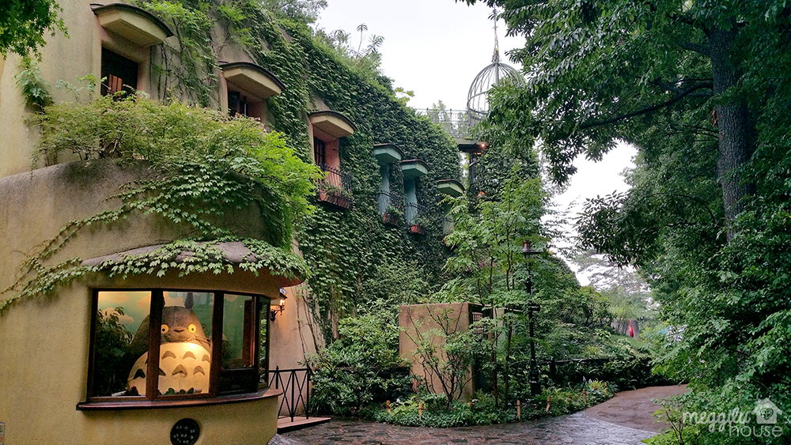
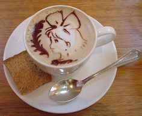
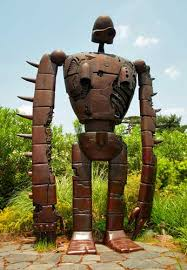

The Ghibli Museum is a museum showcasing the work of the Japanese animation studio Studio Ghibli. It is located in Inokashira Park in Mitaka,
a western city of Tokyo, Japan. The museum combines features of a children's museum, technology museum, and a fine arts museum, and is dedicated to
the art and technique of animation. Some features include a replica of the Catbus from
My Neighbor Totoro (1988), a café, bookstore, rooftop garden,
and a theater for exclusive short films by Studio Ghibli.
Permanent Exhibitions
On the bottom floor is an exhibit room showing the history and science of animation, including a three-dimensional zoetrope named "Bouncing Totoro", with
models of characters from
My Neighbor Totoro (1988). On the first floor is a mock-up of an animation studio. Called "Where a Film is Born," the
five-room exhibit is meant to showcase the creative process of an animation filmmaker such as illustration techniques. Packed with books and toys, the room
also displays drawings and illustrations that cover the walls. Another exhibit demonstrates the process of creating an animated film, with sketches, storyboarding,
keyframing, cleanup, coloring and background painting.
Short Films
The Ghibli Museum shows several short films exclusive to the Ghibli museum. Located in the basement of the museum is The Saturn Theater. The theater has windows
where automated shades lower and open before and after each showing of its short films. This is because Hayao Miyazaki designed the theater with small children in
mind, who could possibly be scared of the closed in theater. The museum shows one of the following Ghibli short-films in the Saturn Theatre:

- Koro's Big Walk
- Water Spider Monmon
- Mei and the Kittenbus
- The Day I Harvested a Star
- The Whale Hunt
- Looking for a Home
- A Sumo Wrestler's Tale
- Mr. Dough and the Egg Princess
- Treasure Hunting
- Boro the Caterpillar
Other Features
Tri Hawks
Tri Hawks is a reading room and bookstore in the Ghibli Museum. Opened on February 6, 2002, it is filled with books recommended by Hayao Miyazaki. "Mi-taka," the city
where the Ghibli Museum is located, means three hawks. The name Tri Hawks comes from a pun based on the city's name.
Mamma Aiuto
Mamma Aiuto, on the top of the Ghibli Museum, is the souvenir gift shop named after the band of sky pirates in the movie
Porco Rosso. The name Mamma Aiuto translates
to "mama, help me" in Italian, which was where
Porco Rosso was set. Among other items, it sells classic and non-Japanese animation movies under the eponymous Ghibli
Museum Library label.
Straw Hat Café

The Straw Hat Café is the Ghibli Museum's only sit-down restaurant. It was created with the help of a housewife who is a mother of four; Miyazaki wanted the café's food to
be "a kind of home cooking". The Café serves hot and cold foods, snacks, and desserts. Sold at the takeout section is an original alcoholic beverage: "Valley of the Wind" beer.
The beer was created by a collaboration with Dairy Kingdom Oratche, a microbrewery in Tanna Basin. The beverage's label was hand drawn by Gorō Miyazaki, Hayao Miyazaki's son,
who is an animation director at Studio Ghibli as well.
Catbus Room
There is a playroom for children age 12 and below with a giant Catbus toy to play in. In order for the Catbus to fit in the museum it had to be downsized from the original film
scale as seen in
My Neighbor Totoro (1988).
Rooftop Garden

On the museum's roof is a garden with a life-size, five meter tall statue of a robot from the final episode of
Lupin III Part II and
Castle in the Sky. The Robot Soldier was made
by the artist Kunio Shachimaru. The statue is formed from hammered copper plate and took 2 years to create. The keystone from the movie
Castle in the Sky can be found here. The keystone,
bearing an inscription in Old Persian cuneiform, is a replica of the control room stone found in the floating castle, Laputa, in the movie
Castle in the Sky.
Museum Tickets
Tickets to the Ghibli Museum are only accepted if bought in advance. These reserve tickets can be purchased outside Japan in Hong Kong, Taiwan, Korea, North America, Europe, and
Australia. Tickets range from ¥1,000 for adults to ¥700 for ages thirteen to eighteen year olds, ¥400 for ages seven to twelve year olds, and ¥100 for ages four to six year olds.
Ages four years old and under are free. At the museum's entry, the reserve tickets are exchanged for a 35mm film strip that features a scene from one of the Studio Ghibli films.
(Source: Ghibli Museum)